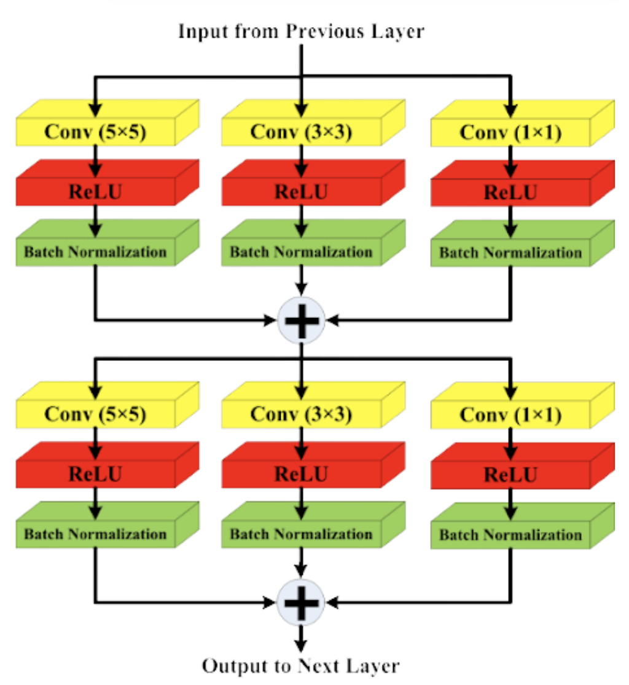
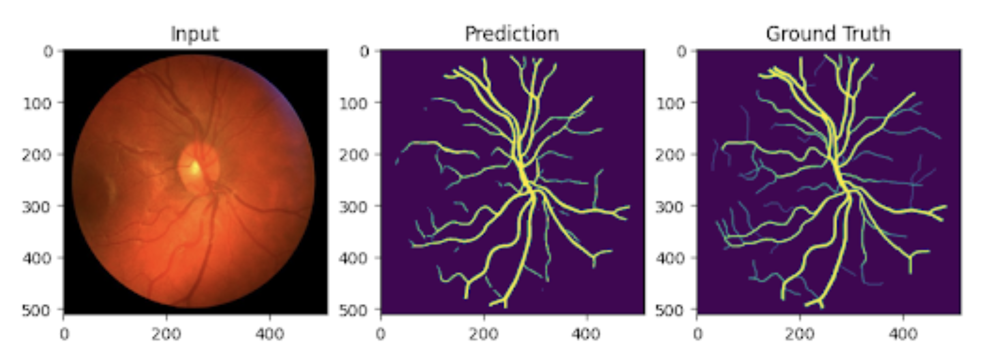

Milad Farazian, Charlie Floeder, Rizq Khateeb, Harshit Shah, Yash Sharma
Original PaperTo implement the LMBiS-Net model and confirm the findings presented in the original paper. Additionally, we aim to apply our implementation to a different dataset that was not used in the paper.
LMBiS-Net’s primary benefit is that it provides an accurate retinal blood vessel segmentation model that is computationally efficient compared to state-of-the-art models. This efficiency can assist ophthalmologists in early detection and treatment of retinal diseases, reducing manual effort and potential human error.
Retinal diseases are a major cause of visual impairment and blindness. Studies show that 5%-20% of the global population aged 40+ has retinal disorders. Examining retinal vessels provides critical insights into underlying medical conditions that contribute to these diseases.
LMBiS-Net is a CNN consisting of three encoder blocks, a bottleneck layer, and three decoder blocks. The network uses multipath feature extraction blocks and incorporates bidirectional skip connections to enhance information flow between the encoders and decoders.
This component introduces feature diversity into the model, reducing overfitting and improving generalization. By using different-sized convolutions, the network captures both low-level and high-level features crucial for blood vessel segmentation.
We created the first publicly available implementation of LMBiS-Net and developed code to augment retinal images, increasing the size of training datasets. Our findings support the original paper’s claims that LMBiS-Net is a computationally efficient and accurate state-of-the-art model for retinal blood vessel segmentation.
Comparison of AUC, Sensitivity, and Specificity between our implementation and the original paper.
Sample input, model predictions, and ground truth retinal blood vessel segmentation.
For more details, feel free to reach out:
Email: miladfarazian@gmail.com